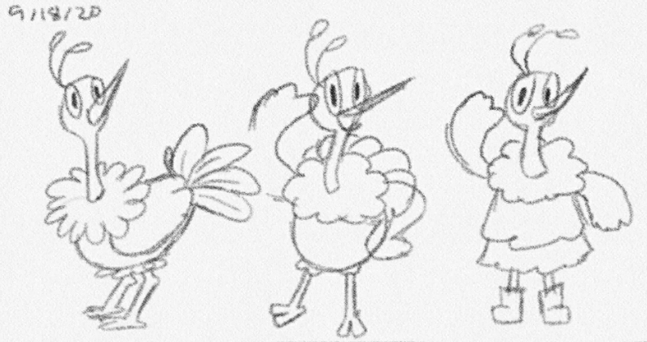
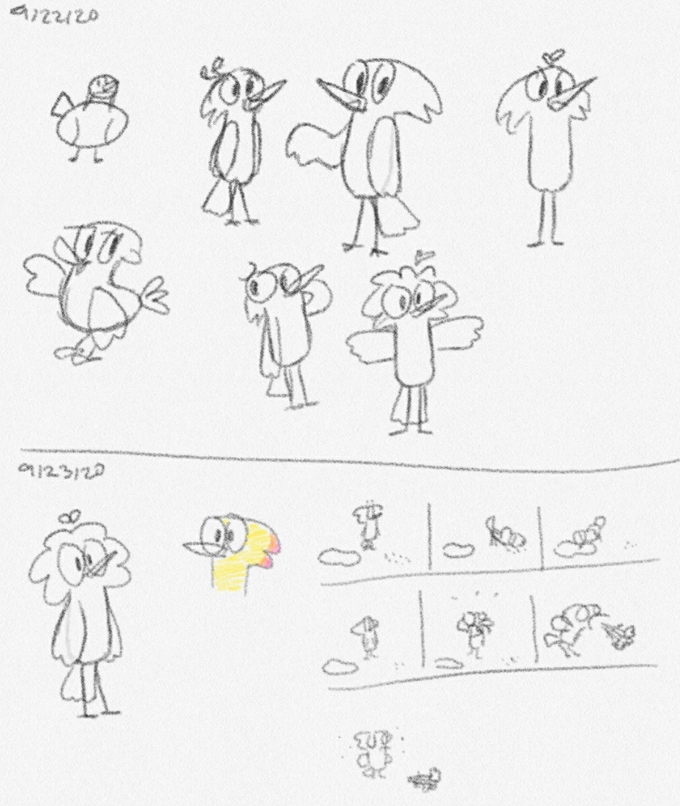
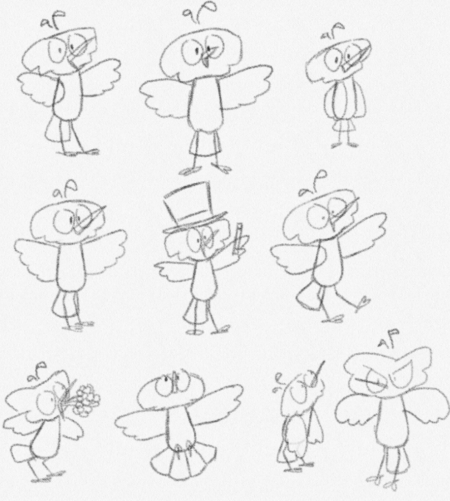
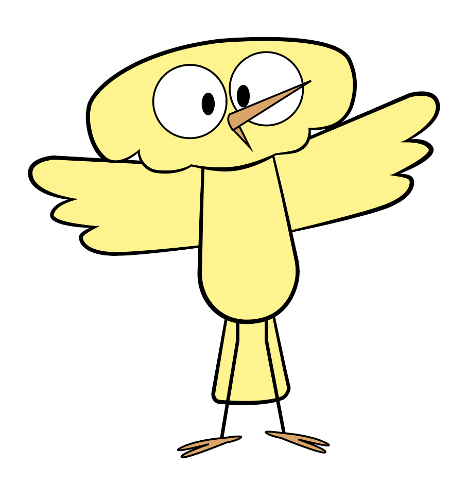
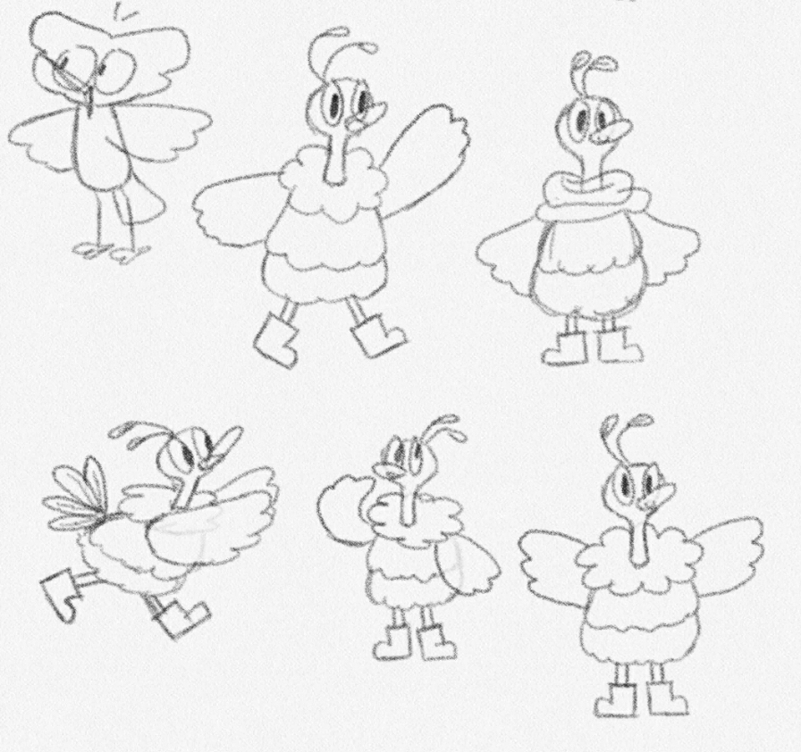
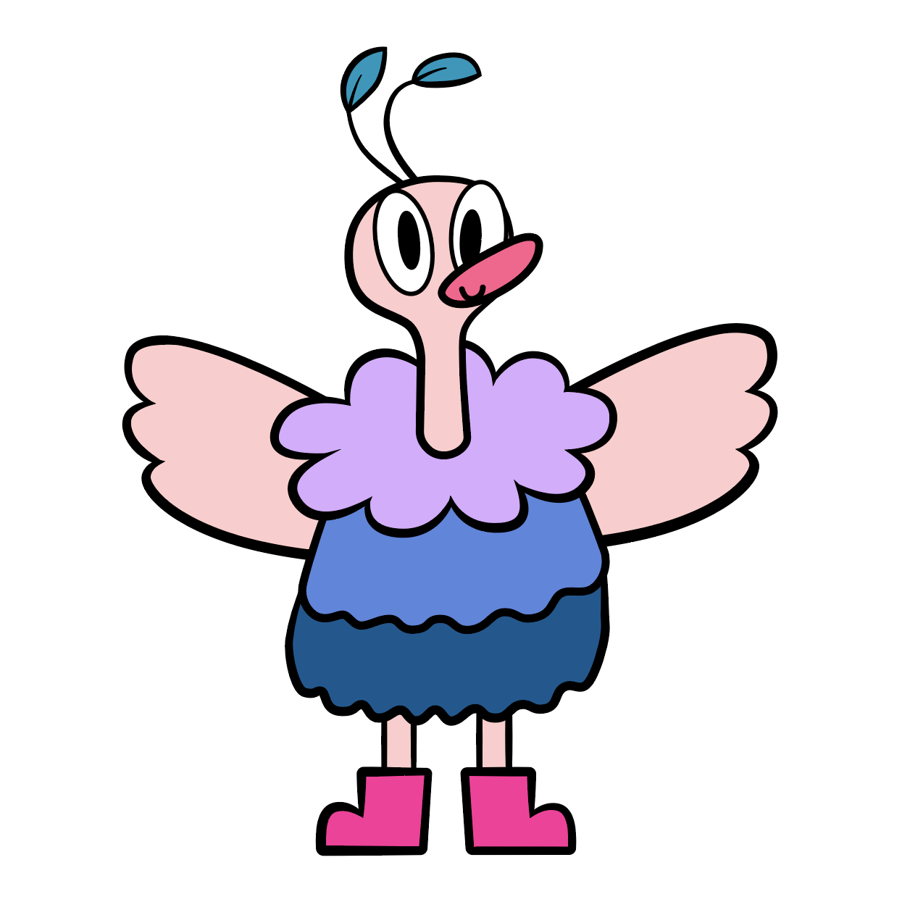
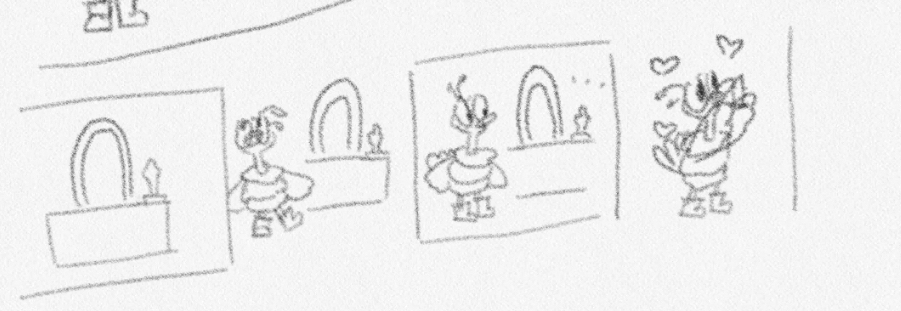
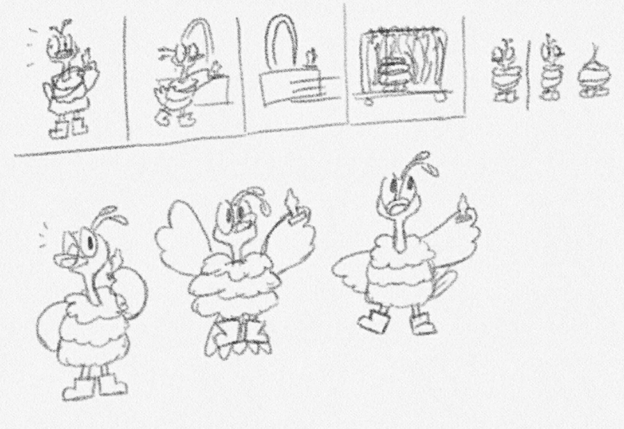
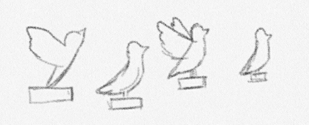
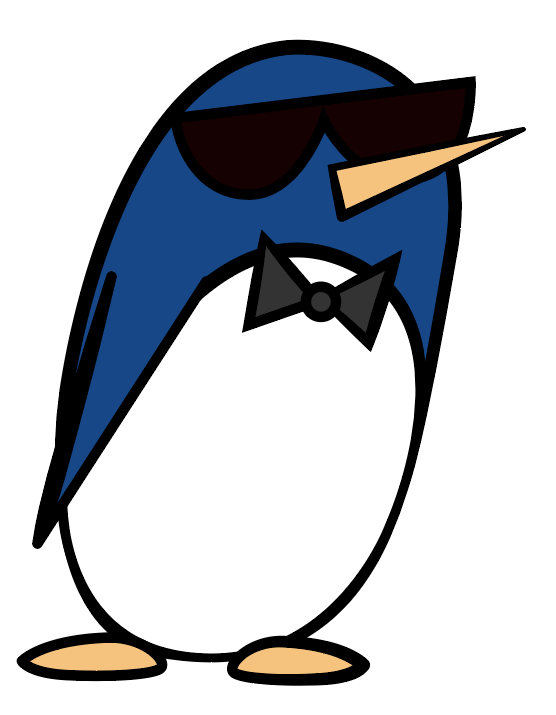

I decided that I was going to make the puppet in Illustrator, but I had to figure out what the character would look like. I went to go sketch out ideas and the first thing I made was an ostrich. I continued that idea and gave it more personality by making it more stylish. On the third sketch, I drew the eventual bird design I would use to create the character, but I hadn't decided on it at the time.

Later on, I sketched out more bird ideas and ended up with a bird design that I thought I would being using. I even sketched out a little storyboard of an animation idea using the new bird character I came up with. The story would involve the bird eating seeds and drinking water before coughing up an entire bouquet of flowers that sprouted from the seeds it ate.

I made more sketches of this bird to get a better idea of what this character would be like.

I eventually drew this bird out in Illustrator, but after I finished coloring it, I started wondering if this bird character was too simple. It had a simple color palette of yellow and orange. One of the things that the puppet would be graded on was how unique it was. I liked how the yellow bird turned out, but I wasn't sure if it felt unique enough.

I thought back to the ostrich character I sketched out earlier and decided to use that one instead because it had more of a different look than just a regular yellow bird. I did a few more sketches of it before drawing it out in Illustrator.


Now that I was planning on using this ostrich character, I couldn't use the story idea I made for the yellow bird anymore. I started thinking about what kinds of stories this ostrich could be in. Because the character was fancy and fashionable, I thought of how actresses wore fancy dresses at award shows like the Oscars. That became my setting for the story.
As for the plot, I thought of the idea that this bird is visiting backstage of an awards show and sees an award on a vanity table. The bird picks it up and gets really excited and celebrates, but soon, someone notices and so the bird puts the award back on the table and hides among the fancy dresses on a clothes rack. I drew out a little storyboard of how it would look like. I wasn't exactly sure what the bird should be doing after it picks up the award, so I left that out of the storyboard, but did a few sketches of the character holding the award.
 
For the award, I was thinking of having it as an Oscar award, but I wasn't completely sure of the copyright rules regarding the use of the Oscar trophy image. To be safe, I decided to make a bird version of the award instead. I looked up images of what a bird trophy could look like and did some quick sketches before creating the asset in Illustrator.

As for the penguin security guard character, I didn't create it until I was almost done animating. I initially planned to have someone off-screen notice the ostrich with the award. However, when I was watching my video, it wasn't totally clear why the ostrich stopped all of a sudden. I thought about adding something to indicate that someone was yelling off-screen, such as lines or text. I soon figured that it would be clearer if a character appeared from the left. I chose a penguin for the character because it's a bird and because penguins are associated with tuxedos, which fits with the award show setting. Then I gave it sunglasses to make it look like a security guard.
